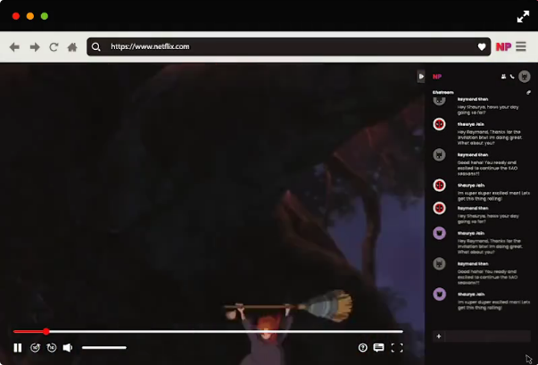
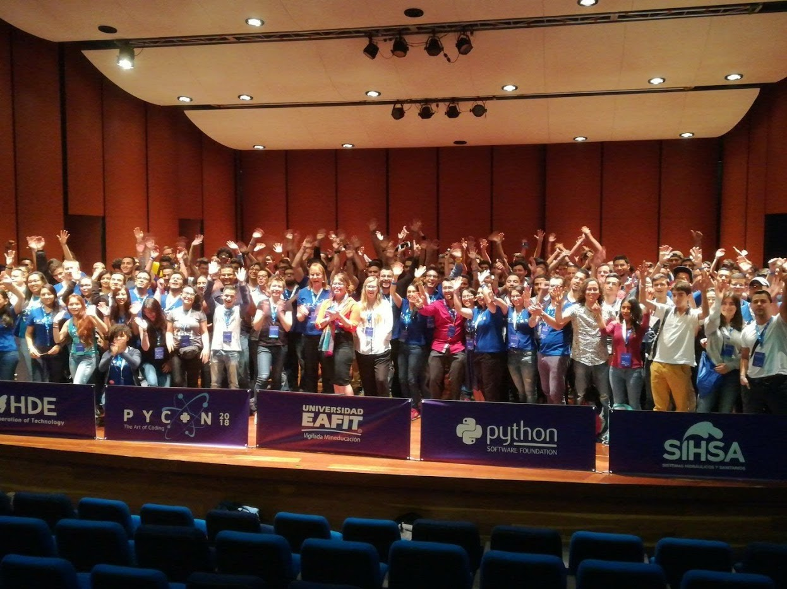

Entradas en tecnología
Montar disco en Linux y error de volumen sucio
- 2025-01-10
Llevaba algún tiempo sin usar mi disco externo, en formato NTFS, y cuando fui a usarlo (montarlo) después de actualizar el sistema operativo, me ha salido el error de volumen sucio. Si te ha pasado, a continuación te indico como solucionarlo.
Configuración de proyectos y herramientas Python con UV
- 2025-01-06
Crearemos un proyecto Python con uv, el cual usa el formato
pyproject.toml para su configuración, facilitando la portabilidad del
mismo. Adicional, este formato ya es un formato común con otros gestores de
paquetes de Python, y usado para la configuración de utilidades.
Problema de Wayland y gráficos híbridos en Linux
- 2024-12-18
Los gráficos híbridos son una estrategia de los equipos modernos a incorporar dos tarjetas gráficas, una integrada y una dedicada, con capacidades y consumo de energía diferentes. La idea es no usar la dedicada, salvo que sea requerido para el renderizado 3D. Sin embargo, esto no es un problema resuelto en Linux y afecta a las aplicaciones nativas en Wayland, el cual es el nuevo y moderno protocolo para comunicación de servidor gráfico usado por los compositores de ventanas en Linux (en reemplazo de X11), que hagan uso de Vulkan.
Configurar Starship en Manjaro y Zsh
- 2024-12-15
Hace poco vengo cambiando múltiples herramientas en mi día a día, y en el manejo de la terminal Linux hay varios de esos cambios. Uno de esos es el shell prompt (que podría traducirse tal vez como “indicador de terminal”), y estoy usando starship. Sin embargo, hay detalles no documentados sobre como habilitarlo en Manjaro con zsh, que aquí les cuento.

Conecta con una instancia de Cloud SQL en Manjaro
- 2024-12-10
Aprovechando que estoy en reinstalación por la transición de (X/K)ubuntu a Manjaro, les contaré sobre como conectar a una instancia de Cloud SQL en Manjaro.
Problemas de conexión wifi en Linux
- 2024-12-07
Si el WiFi de manera aleatoria comienza a desconectarse, y al revisar el listado de redes estas han desaparecido, algunos detalles por evaluar son:
¿Qué hacer después de instalar Manjaro KDE 24?
- 2024-12-05
Hace poco decidí pasarme a Manjaro KDE (24.1) y estoy muy contento del cambio. Así que con motivo a esto, les cuento sobre las cosas por hacer después de completar la instalación.
Distrohopping: Cambiar de distribución Linux y no morir en el intento
- 2024-12-03
Vengo de dos cambios de distribución Linux recientes, y eso me hizo pensar un poco en el esfuerzo asociado y en como ese esfuerzo se puede reducir. Igualmente, recordé el concepto asociado de “distrohopping” y las discusiones alrededor de esta práctica, en la cual muchos terminan afirmando que realmente es perder el tiempo y que aporta poco valor, pero yo no lo veo así y quiero compartirles el valor que le veo y el cómo facilitarlo.
Unir video y audio con ffmpeg y bash
- 2024-10-20
Recién mi novia me pidió el favor de ayudarle a descargar los videos de un curso antes de que se venciera el acceso a la cuenta, y tocaba descargar los videos de Vimeo. Pero el truco de descarga de estos videos, hace que luego toque unir el audio y el video, así que les contaré como hacerlo con FFMPEG y Bash.
Agregar Google Ads en Sphinx
- 2024-09-25
Siguiendo con ajustes en mi blog, algo que quería darle una nueva oportunidad, así algunos lo odien, es a Google Ads y ver esto como permite generar algún ingreso ahora que muchos usamos bloqueadores (sí, yo también). Les cuento como configurarlo a través de la modificación de las plantillas por defecto.

Agregar logo y favicon en Sphinx
- 2024-09-24
Un nuevo paso en mi blog, es que decidí dejar una huella de personalización a través de un logo, algo sencillo, pero propio, distinto a una imagen descargada como lo era antes y que por lo mismo no lo había configurado. Les cuento como configurar el logo y el favicon en Sphinx.
UV, alternativa rápida a PIP y VENV
- 2024-06-30
UV es un gestor de paquetes y entornos virtuales alternativo para Python,
desarrollado en Rust y que nos promete ser muy rápido en los procesos que
pretende reemplazar de PIP y VENV. En este sentido, solo es añadir uv antes de
las instrucciones habituales y debe funcionar (salvo algunos casos particulares
de compatibilidad o de no existir implementación).
Instalar Rust en Linux
- 2024-06-15
En mi proceso por aprender Rust, iré compartiendo algunos pasos con ustedes. En esta ocasión, como instalar Rust en Linux, y prepararnos para usarlo en VSCode y en Notebook.

Migrando mi blog de Nikola a Sphinx
- 2024-05-24
Migrar de un generador estático a otro no es un proceso del todo transparente, así que aquí te explico algunos por menores para hacer una migración de Nikola a Sphinx.
Configurar segundo teclado en Linux
- 2024-05-19
Si tienes un segundo teclado para conectar a tu equipo Linux, pero su distribución de lenguaje es diferente, te explico como configurar aquí.
Crear un blog con Sphinx
- 2024-05-16
Por fin he dado el paso de retomar el blog, y con ello un proceso de migración que deseaba, generar el blog con Sphinx. Sobre este proceso les estaré contando en varias entradas, ya que la migración no la he concluido, y esta es la primera entrada al respecto, con lo más básico para iniciar y no fracasar en el intento.
Usar Ubuntu en Windows con WSL2
- 2020-10-05
Como contaba en una que otra publicación, por motivos laborales mantengo mucho en Windows pero es necesario en ocasiones tener Linux a la mano. Sin duda a nivel de desarrollo Linux toma cada vez mayor relevancia y es notorio cuando Microsoft le da relevancia al soporte de Linux en su ecosistema, no solo en despliegues en nube sino también en el mismo escritorio. En esto último, referimos a WSL (Windows Subsystem for Linux) [wsl].
Crear versión de Windows mínima con MSMG Toolkit
- 2020-07-09
Reciente eliminé la partición de Windows de mi máquina por un problema en el que probé crear la tabla de partición de nuevo, pero me dio pereza instalar en ese momento Windows porque mi sistema operativo principal es Linux. Además, Windows no funcionaba fluidamente en la máquina.

Instalar paquetes snap en Linux Mint 20
- 2020-06-29
¿Ya tienes Linux Mint 20 y deseas instalar paquetes Snap? Mint ha decidido deshabilitar la instalación de Snap por defecto y es necesario cambiar la configuración de apt para poderlo hacer.
Instalar Anaconda Python
- 2020-06-29
En los últimos años, una herramienta se ha popularizado no solo como una base para el ecosistena de la analítica de datos («ciencia de datos» como llaman también algunos) sino también en general para el desarrollo en Python (científico, web o de propósito general). Esta herramienta es Anaconda, que no solo nos facilita un sistema de distribución de paquetes multiplataforma, un repositorio principal con amplio soporte multiplataforma (canal default o anaconda) sino un gestor de ambientes para permitir aislar nuestras dependencias facilitando la reproducibilidad y evitando los conflictos.
Ver Netflix juntos pero separados
- 2020-06-21
Ante la necesidad de cuidarnos en esta cuarentena, hemos perdido los momentos de cine o de maratones con familia y amigos, pero hasta en esto hay forma de innovar y buscar opciones para mantener un equivalente de estas actividades sin descuidar nuestra salud, cumpliendo cada protocolo requerido gracias a la tecnología.
Determinar intersecciones en el diagrama de Venn con R
- 2020-06-13
Esta entrada es mi primera entrada asociada al lenguaje R y sobre mi primer paquete en R: venn.compute. Este paquete surge por un caso de uso particular que estaba ayudando a automatizar de determinar los elementos (no solo el dibujo ni la cantidad) de las intersecciones y específicos de un diagrama de Venn, útil en bioinformática para comparación de genes.

Reformas del blog: Parte 1
- 2020-05-26
Bueno, he estado en múltiples ocasiones por escribir sobre mantener un blog, y hoy fue el caso, pero centrado en unas actualizaciones que he hecho para mejorar la experiencia de los lectores que usan su celular y deben soportar altos tiempos de carga y una alta descarga en imágenes cuando las contiene.
Usar la cámara de tu celular como webcam
- 2020-05-17
Con la nueva normalidad que vivimos alrededor de la virtualidad, el uso de videollamadas se ha incrementado y muchas cámaras incorporadas en los equipos no poseen buenas características (o son ausentes). Adicional, el soporte de opciones como usar el celular, una buena alternativa para no comprar una cámara web, es amplio en Windows pero no en Linux.

Calcular distancia geodésica con Python
- 2020-05-10
Aunque una de las cosas que más ha rondado en mi desarrollo académico y laboral es la programación, y buena parte de los años en ello con Python, nunca había realizado una entrada al respecto en el blog (lo más cercano ha sido una entrada sobre Crear documentación de un proyecto Python con Sphinx y Crear contenedor Docker aplicación GUI - EALite).
Crear documentación de un proyecto Python con Sphinx
- 2020-01-06
Sin duda, una etapa importante en cualquier proyecto de desarrollo (y no solo de software) es la generación de la documentación. En el caso de software es posible asistirse de herramientas que ayudan a automatizar la generación de la documentación mediante extracción de comentarios en el código, usar palabras claves y lenguaje de marcado para modificación de estilo en el texto o inclusión de otros elementos que no sean solo texto plano (imágenes, ecuaciones, enlaces entre otros).
Usar Anaconda Python en Git Bash
- 2019-12-31
Recientemente, por motivos laborales he tenido que trabajar en Windows y es por esto que tuve la necesidad de buscar una opción cómoda de usar Git en Windows, con soporte de Bash a lo que estoy acostumbrado en Linux y con Python Anaconda reconocido. De alguna manera, la versión mínima de como usar Windows sin morir en el intento.
Crear contenedor Docker aplicación GUI - EALite
- 2019-11-22
Dando continuidad al uso de contenedores que inicie en la publicación anterior, Crear contenedor LXC para aplicación GUI - EALite, reproduciré la instalación de Enterprise Architect Viewer (EALite) con Docker (y por supuesto, Wine). Si deseas reproducir el ejemplo de este caso, requieres reproducir la el artículo mencionado para extraer el directorio de Wine.
Crear contenedor LXC para aplicación GUI - EALite
- 2019-11-11
El uso de contenedores en la industria del software se ha extendido ampliamente y no es de extrañar, ofrece a los desarrolladores la posibilidad de mejorar el aislamiento de sus servicios y de ahí hacerlo menos susceptible a errores por colisiones con otros servicios o conflictos de dependencias. Al mismo tiempo, son una alternativa más amigable en recursos respecto a las máquinas virtuales.

Instalando paquetes en Linux (Mint)
- 2019-10-22
En Linux ahora tenemos muchas más opciones para instalar nuestros programas favoritos y de uso diario, según los intereses personales en reducir espacio en disco, aumentar estabilidad, mejorar seguridad, disponer siempre de la última versión, tener muy buena integración con el sistema operativo o no requerir permisos de administrador. Algunas de las estrategias, incluso facilitan que el mismo mecanismo podemos usarlo en más de una distribución Linux y así disponer de una transición más simple.
Recuperar el arranque de tu Moto G5 en Linux
- 2019-10-21
Recientemente, aunque cambié a un Moto G7, pensaba restaurar el celular de fábrica pero salió mal el proceso (no siempre es fácil si pretendes eliminar el acceso a administrador -root- y el recovery personalizado -TWRP-).
La experiencia de PyCon Colombia 2018
- 2018-02-18
Tras mi primera participación en PyCon Colombia (segunda versión del evento), me encuentro con una comunidad bastante amplia y que hace honor a una de las características más importantes del lenguaje, y es lo extensa y variada que es su comunidad. Colombia no es la excepción a esto.
Ejecutando macOS en Linux
- 2018-01-18
Debo admitirlo, no me gusta Mac y sigue sin gustarme, pero en múltiples ocasiones se hace necesario poder disponer de un Mac al igual que de un Windows para efectos de pruebas o de correr software específico cuando no hay de otra. Por este caso me di a la tarea de buscar como lograr ejecutar macOS en mi equipo Asus que posee Linux instalado de la forma más fácil posible. A continuación, como ejecutar macOS (específicamente hackintosh) en tu equipo Linux (el procedimiento aplica también para Windows).

Problemas de audio en Moto G5
- 2018-01-04
Recién cambié mi celular Moto G3 por un Moto G5 y vaya susto el que me llevé inicialmente. La verdad, como el cambio fue más bien un asunto de afán no revisé foros previamente (ver recomendaciones a la hora de comprar) sobre los problemas y me confié de los conocidos que tienen este celular y que nunca les he escuchado de problemas.
Comprando celular para personalizar
- 2018-01-03
Después de algún tiempo de no publicar aquí, vuelvo con la intención de tener regularidad en el blog. Para empezar este año y dado a mi cambio de celular, estuve pensando sobre cuales debían ser las características a revisar antes de comprar un celular. Bueno, aquí el detalle es que cuando yo tengo un celular me gusta personalizarlo pero personalizar no es simplemente una tapa o instalarle una aplicación sino cambiar la versión de Android por versiones modificadas y tener privilegios de administrador.
Topónimos colombianos en RLA-ES
- 2017-07-11
Primero, saludo después de un tiempo largo de ausencia. Por diversos motivos el blog tuve que dejarlo en el olvido pero hoy lo reanudo. El como volví merece una publicación posterior.
Con calma para SteamOS
- 2014-04-20
Bueno, es un poco raro que sin escribir hace mucho, lo primero que escriba sea del mundo linux que del mundo de la ciencia y particularmente de la física que es mi especialidad. Pero resulta que a veces es un poco más fácil escribir sobre cosas que no toque justificar tanto.
Cantante virtual sensación
- 2012-09-25
Como toda una historia futurista y ciencia ficción, como la de William Gibson es su obra Idoru que en japones significa «ídolo», una cantante totalmente virtual se encuentra en el top de ventas de las listas japonesas, y ademas da increíbles conciertos a sus seguidores.
Viendo carga molecular
- 2012-02-28
Científicos de IBM fueron capaz de medir por primera vez la distribución de carga de una molécula individual. Este logro permitirá dar nuevas luces acerca de la formación de enlaces entre átomos y moléculas, así como el estudio de distribución electrónicas con estructuras moleculares funcionales.

Tweets extraterrestres
- 2011-07-26
Hace casi 2 semanas estaba mirando tuits en el Twitter oficial de NASA y me pareció curioso ver un tuit de uno de los astronautas que estaba en la última misión del transbordador Atlantis.

Energía alternativa para dispositivos móviles
- 2011-07-07
Las fuentes de energía son parte vital de los sistemas que actualmente nos rodean… que si no la hay, bueno, desde las grandes estructuras hechas por hombre hasta las complejas formas de vida se degradarían, dejarían de funcionar y simplemente sucumben.
20 años de Linux
- 2011-04-10
Hace 20 años, Linus Torvalds tomo la decisión de compartir su sistema operativo con el mundo. No mucho después, decidió licenciar este bajo General Public Licence (GPL). Este momento histórico cambio todo en el mundo en la historia de la computación.
Imágenes de puntos cuánticos
- 2011-02-22
Por mas de una década investigadores han intentado crear pantallas de televisor a partir de puntos cuánticos. Teóricamente los puntos cuánticos podrían ofrecer imágenes de muy alta resolución y altos niveles de eficiencia energética frente a los actuales televisores.